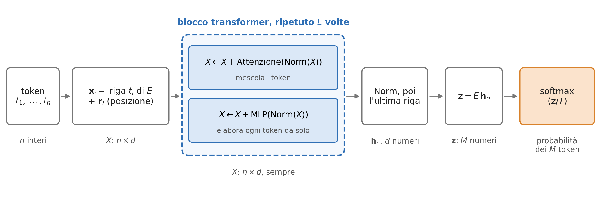
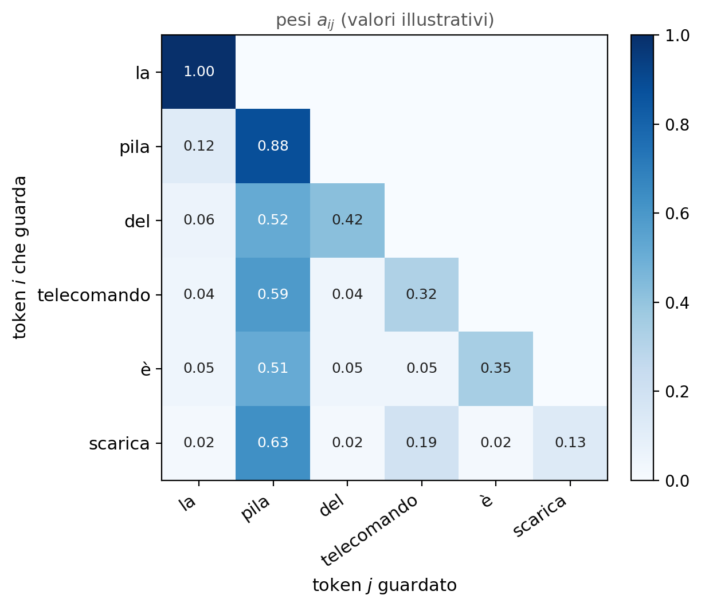

Come funziona un transformer
Approfondimento facoltativo: la matematica dei modelli linguistici
I token
- Un tokenizzatore divide il testo in pezzi presi da un vocabolario fisso di \(M\) voci: le parole frequenti restano intere, quelle rare si spezzano. GPT-2 ha \(M = 50\,257\); i modelli recenti oltre 100 000.
- Il vocabolario si costruisce una volta per tutte, prima dell’addestramento (Byte Pair Encoding): si parte dai singoli caratteri (in GPT-2, i 256 byte) e si fonde ripetutamente la coppia di pezzi adiacenti più frequente nei dati, finché le voci sono \(M\).
- Ogni pezzo diventa il suo indice nel vocabolario: il testo è una sequenza di interi \(t_1, t_2, \dots, t_n\), con \(0 \le t_i < M\).
- Per immagini e suoni i token sono già vettori di numeri: i 49 pixel di un quadrato di MNIST, o una colonna dello spettrogramma.
Da qui in poi il modello lavora solo su vettori di numeri, come la rete dei laboratori.
Dagli interi ai vettori
- Il token \(t\) diventa un vettore \(\mathbf{x} \in \mathbb{R}^d\): la riga \(t\) di una matrice \(E\) di dimensione \(M \times d\) (embedding). Le righe di \(E\) sono parametri, addestrati come i pesi.
- È un
DenseLayersenza bias: se \(\mathbf{e}_t\) è il vettore one-hot del token (tutti zeri, un 1 in posizione \(t\)), allora \(\mathbf{x} = E^\mathsf{T} \mathbf{e}_t\), con \(W = E^\mathsf{T}\) di dimensione \(d \times M\). Per un quadrato d’immagine con pixel \(\mathbf{u}\), allo stesso modo \(\mathbf{x} = W \mathbf{u}\). - Al token in posizione \(i\) si somma un vettore \(\mathbf{r}_i\) che dipende solo dalla posizione: \(\mathbf{x}_i \leftarrow \mathbf{x}_i + \mathbf{r}_i\). In GPT-2 e GPT-3 i \(\mathbf{r}_i\) sono anch’essi parametri; il primo transformer usava seni e coseni di frequenze diverse. Perché servono, lo si vede nell’attenzione.
I vettori, messi in riga, formano la matrice \(X\) di dimensione \(n \times d\): la riga \(i\) è \(\mathbf{x}_i^\mathsf{T}\), il token \(i\). In GPT-3, \(d = 12\,288\).
Il modello intero

\(L\) blocchi uguali, ciascuno con i suoi pesi, trasformano \(X\) senza cambiarne la forma. In GPT-3: \(M = 50\,257\), \(d = 12\,288\), \(L = 96\), fino a \(n = 2048\) token. Il pezzo nuovo è l’attenzione.
Il contesto
In «la pila del telecomando è scarica», pila è una batteria; in «una pila di libri», no. Il significato di un token dipende dagli altri token della sequenza.
Un DenseLayer applicato a ogni token separatamente non può saperlo: vede un vettore alla volta. Nella rete MNIST ogni immagine è un esempio a sé; qui gli ingressi di una sequenza sono legati fra loro.
Serve un’operazione che mescoli i token: per ogni token, una media pesata dei vettori degli altri, con pesi calcolati dai token stessi. È l’attenzione.
L’attenzione
Per ogni token \(i\), tre DenseLayer senza bias danno tre vettori di dimensione \(d_k\): \[
\mathbf{q}_i = W_Q\, \mathbf{x}_i \ \ (\textit{query}), \qquad \mathbf{k}_i = W_K\, \mathbf{x}_i \ \ (\textit{key}), \qquad \mathbf{v}_i = W_V\, \mathbf{x}_i \ \ (\textit{value}),
\] con \(W_Q\), \(W_K\), \(W_V\) di dimensione \(d_k \times d\). Per ogni coppia di token \((i, j)\): \[
s_{ij} = \frac{\mathbf{q}_i \cdot \mathbf{k}_j}{\sqrt{d_k}}, \qquad
a_{ij} = \frac{e^{s_{ij}}}{\sum_{j'} e^{s_{ij'}}}, \qquad
\mathbf{y}_i = \sum_j a_{ij}\, \mathbf{v}_j .
\]
- \(s_{ij}\): quanto il token \(j\) serve al token \(i\) (la query di \(i\) dice cosa cerca, la key di \(j\) cosa offre).
- \(a_{ij}\): la softmax della riga \(i\), cioè pesi positivi a somma 1 su \(j\).
- \(\mathbf{y}_i\): la media dei value con quei pesi, il nuovo vettore del token \(i\).
L’attenzione in forma matriciale
Con \(X\) che ha per righe i token, la riga \(i\) di \(X W_Q^\mathsf{T}\) è \((W_Q \mathbf{x}_i)^\mathsf{T} = \mathbf{q}_i^\mathsf{T}\); quindi \[ Q = X W_Q^\mathsf{T}, \quad K = X W_K^\mathsf{T}, \quad V = X W_V^\mathsf{T} \ \ (n \times d_k), \qquad S = \frac{Q K^\mathsf{T}}{\sqrt{d_k}} \ \ (n \times n), \qquad Y = A\, V, \] con \(A\) la softmax di \(S\) riga per riga: l’elemento \((i, j)\) di \(Q K^\mathsf{T}\) è proprio \(\mathbf{q}_i \cdot \mathbf{k}_j\).
- Costo. \(S\) ha \(n^2\) elementi: raddoppiando la sequenza il costo dell’attenzione quadruplica. Per questo il contesto è limitato (2048 token in GPT-3).
- Ordine. Scambiando due righe di \(X\), si scambiano solo le stesse due righe di \(Y\) (senza la maschera della slide seguente): l’attenzione vede un insieme di token, non una sequenza. Per questo si sommano le posizioni \(\mathbf{r}_i\).
Perché \(\sqrt{d_k}\)
Se le componenti \(q_c\) di \(\mathbf{q}_i\) e \(k_c\) di \(\mathbf{k}_j\) sono indipendenti, con media 0 e varianza 1 (come all’inizio, con pesi ben inizializzati), \(\mathbf{q}_i \cdot \mathbf{k}_j = \sum_c q_c\, k_c\) ha media 0 e \[ \mathrm{Var}(\mathbf{q}_i \cdot \mathbf{k}_j) = \sum_{c=1}^{d_k} \mathrm{Var}(q_c\, k_c) = \sum_{c=1}^{d_k} \langle q_c^2 \rangle \langle k_c^2 \rangle = d_k . \]
- Senza la divisione, con \(d_k = 128\) gli \(s_{ij}\) varrebbero tipicamente \(\pm\sqrt{128} \approx \pm 11\). Due valori che differiscono di 20 danno pesi in rapporto \(e^{20} \approx 5 \cdot 10^8\): la softmax mette quasi tutto il peso su un solo \(j\).
- La softmax è allora satura, come una sigmoide con ingresso grande: le sue derivate sono quasi nulle e la backpropagation non corregge più i pesi.
- Dividendo per \(\sqrt{d_k}\) la varianza è 1 per ogni \(d_k\): i pesi partono distribuiti, e l’addestramento decide quali token contano.
La maschera causale

- scarica guarda soprattutto pila: il suo nuovo vettore porta l’informazione della batteria.
- Il token \(i\) non deve vedere quelli che lo seguono: si pone \(s_{ij} = -\infty\) per \(j > i\), quindi \(a_{ij} = 0\) perché \(e^{-\infty} = 0\). Sopra la diagonale \(A\) è nulla.
- Quindi la riga \(i\) di \(Y\) dipende solo dai token \(1, \dots, i\): generando, i \(\mathbf{k}_j\) e \(\mathbf{v}_j\) già calcolati si riusano (KV cache).
Più teste
In ogni blocco l’attenzione si calcola \(H\) volte in parallelo (teste), ciascuna con le sue matrici \(W_Q^{(h)}\), \(W_K^{(h)}\), \(W_V^{(h)}\) di dimensione \(d_k \times d\), con \(d_k = d / H\): \[
Y^{(h)} = \mathrm{softmax}\!\left( \frac{Q^{(h)} K^{(h)\mathsf{T}}}{\sqrt{d_k}} \right) V^{(h)} \quad (n \times d_k), \qquad h = 1, \dots, H .
\] Le \(H\) uscite si affiancano in una matrice \(n \times d\), che passa in un DenseLayer senza bias \(W_O\), \(d \times d\): \[
\mathrm{Attenzione}(X) = \big[\, Y^{(1)} \,\big|\, Y^{(2)} \,\big|\, \cdots \,\big|\, Y^{(H)} \,\big]\; W_O^\mathsf{T} \qquad (n \times d).
\]
Ogni testa impara relazioni diverse: nei modelli addestrati si trovano, per esempio, teste che guardano il token precedente, o il nome a cui si riferisce un articolo. In GPT-3, \(H = 96\) teste da \(d_k = 128\): \(96 \cdot 128 = 12\,288 = d\).
L’attenzione in C++
Le formule con Eigen (Laboratori 01 e 05): tre token, \(d = d_k = 2\), pesi scelti a mano.
attenzione.cpp (prima parte)
#include <cmath>
#include <iostream>
#include <Eigen/Dense>
// softmax di ogni riga di S
Eigen::MatrixXd softmax_righe(const Eigen::MatrixXd& S) {
Eigen::MatrixXd A(S.rows(), S.cols());
for (int i = 0; i < S.rows(); ++i) {
A.row(i) = (S.row(i).array()
- S.row(i).maxCoeff()).exp();
A.row(i) /= A.row(i).sum();
}
return A;
}Il massimo \(m\) sottratto si semplifica (\(e^{-m}\)): evita solo che exp() dia numeri enormi.
L’attenzione in C++, il main
attenzione.cpp (seconda parte)
int main() {
Eigen::MatrixXd X(3, 2); // 3 token, d = 2: una riga per token
X << 1.0, 0.0, 0.0, 1.0, 1.0, 1.0;
Eigen::MatrixXd WQ(2, 2), WK(2, 2), WV(2, 2);
WQ << 1.0, 0.0, 0.0, 2.0;
WK << 2.0, 0.0, 0.0, 1.0;
WV << 1.0, 1.0, 0.0, 1.0;
Eigen::MatrixXd Q = X * WQ.transpose(); // riga i: q_i = W_Q x_i
Eigen::MatrixXd K = X * WK.transpose(); // riga i: k_i
Eigen::MatrixXd V = X * WV.transpose(); // riga i: v_i
Eigen::MatrixXd S = Q * K.transpose() / std::sqrt(2.0); // s_ij = q_i . k_j / sqrt(d_k)
Eigen::MatrixXd A = softmax_righe(S); // i pesi a_ij
Eigen::MatrixXd Y = A * V; // riga i: y_i
std::cout << "A =\n" << A << "\n\nY =\n" << Y << "\n";
return 0;
}L’attenzione in C++, il risultato
A =
0.445808 0.108383 0.445808
0.108383 0.445808 0.445808
0.163579 0.163579 0.672842
Y =
1.44581 0.554192
1.44581 0.891617
1.67284 0.836421A mano, il primo token: \(\mathbf{q}_1 = (1, 0)\), \(\mathbf{k}_j = (2, 0), (0, 1), (2, 1)\), quindi \(s_{1j} = (\sqrt2, 0, \sqrt2)\) e \(a_{1j} = (e^{\sqrt2}, 1, e^{\sqrt2}) / (2 e^{\sqrt2} + 1) = (0.446, 0.108, 0.446)\), la prima riga di A. Con \(\mathbf{v}_j = (1, 0), (1, 1), (2, 1)\): \[
\mathbf{y}_1 = 0.446\,(1, 0) + 0.108\,(1, 1) + 0.446\,(2, 1) = (1.446,\ 0.554).
\]
Provate: prima della softmax, negli elementi di S sopra la diagonale mettete -INFINITY (da <cmath>). Cosa diventa la prima riga di A?
1 0 0: il primo token guarda solo se stesso. La seconda riga diventa 0.19557 0.80443 0, la terza non cambia.
Il blocco transformer
\[ X \leftarrow X + \mathrm{Attenzione}\big(\mathrm{Norm}(X)\big), \qquad X \leftarrow X + \mathrm{MLP}\big(\mathrm{Norm}(X)\big) \]
- L’attenzione mescola i token; l’MLP elabora ogni token da solo, con gli stessi pesi per tutti. La forma di \(X\), \(n \times d\), non cambia.
- Somme residue. Ogni parte aggiunge una correzione: \(X_{\ell+1} = X_\ell + F(X_\ell)\), quindi nella backpropagation \(\partial X_{\ell+1} / \partial X_\ell = I + \partial F / \partial X_\ell\). Il prodotto di queste jacobiane su tutti i blocchi contiene il termine \(I\): una parte del gradiente arriva intatta ai primi blocchi, anche con centinaia di strati.
- Il blocco si ripete \(L\) volte, ciascuna con i suoi pesi: \(L = 96\) in GPT-3.
Norm e MLP
Norm (LayerNorm), su ogni riga \(\mathbf{x}\) di \(X\) separatamente, con \(\mu\) e \(\sigma^2\) media e varianza delle sue \(d\) componenti: \[ \mathrm{Norm}(\mathbf{x}) = \boldsymbol{\gamma} \odot \frac{\mathbf{x} - \mu}{\sqrt{\sigma^2 + \varepsilon}} + \boldsymbol{\beta}, \] con \(\boldsymbol{\gamma}, \boldsymbol{\beta} \in \mathbb{R}^d\) parametri, \(\odot\) il prodotto elemento per elemento, \(\varepsilon \approx 10^{-5}\). Tiene le componenti dell’ordine di 1.
MLP, su ogni riga separatamente: la rete dei laboratori, con due DenseLayer \(d \to 4d \to d\), \[
\mathrm{MLP}(\mathbf{x}) = W_2\, \mathrm{GELU}(W_1 \mathbf{x} + \mathbf{b}_1) + \mathbf{b}_2, \qquad
\mathrm{GELU}(z) = z\, \Phi(z),
\] con \(W_1\): \(4d \times d\), \(W_2\): \(d \times 4d\) e \(\Phi\) la funzione di ripartizione della gaussiana standard. La GELU è una ReLU smussata: circa \(z\) per \(z \gg 0\), circa 0 per \(z \ll 0\).
Il token successivo
- Dopo l’ultimo blocco e una Norm, l’ultima riga \(\mathbf{h}_n\) dà \(\mathbf{z} = E\, \mathbf{h}_n\), \(M\) numeri: un
DenseLayer\(d \to M\) che in GPT-2 usa la stessa \(E\) dei token. - Con la temperatura \(T\): \[ p_t = \frac{e^{z_t / T}}{\sum_{s=0}^{M-1} e^{z_s / T}} . \] È la distribuzione di Boltzmann con energie \(-z_t\): con \(T \to 0\) vince il token più probabile, con \(T \to \infty\) sono equiprobabili, \(T = 1\) dà le probabilità della rete.
- Si estrae il token, lo si aggiunge e si ricomincia; con la KV cache, una riga nuova per blocco.
Dove stanno 175 miliardi di parametri
In un blocco, trascurando bias e Norm (\(13 d\) numeri):
| parte | matrici | parametri |
|---|---|---|
| attenzione | \(W_Q\), \(W_K\), \(W_V\) di tutte le teste insieme, e \(W_O\): quattro matrici \(d \times d\) | \(4d^2\) |
| MLP | \(W_1\), \(4d \times d\), e \(W_2\), \(d \times 4d\) | \(8d^2\) |
| blocco | \(12 d^2\) |
Per GPT-3, \(d = 12\,288\) e \(L = 96\): \(96 \cdot 12 \cdot 12\,288^2 \approx 173{,}9\) miliardi. La matrice \(E\) ne aggiunge \(50\,257 \cdot 12\,288 \approx 0{,}6\) miliardi, le posizioni \(2048 \cdot 12\,288 \approx 0{,}03\): in totale circa 175 miliardi.
L’addestramento
- Una sequenza \(t_1, \dots, t_{n+1}\) dei dati dà \(n\) esempi: in ingresso \(t_1, \dots, t_n\), e nella posizione \(i\) il bersaglio \(t_{i+1}\). Un solo
forwarddà tutte le \(\mathbf{p}^{(i)}\). - La loss è la cross-entropy (Laboratorio 14) con bersaglio one-hot, media sulle posizioni: \[ \mathcal{L} = -\frac{1}{n} \sum_{i=1}^{n} \ln p^{(i)}_{t_{i+1}} . \] Con pesi casuali \(p \approx 1/M\) e \(\mathcal{L} \approx \ln 50\,257 \approx 10{,}8\). Il gradiente rispetto a \(\mathbf{z}\) è \(\mathbf{p} - \mathbf{t}\) (Laboratorio 14); l’ottimizzatore è Adam (Lezione 20).
- Senza la maschera causale, nella posizione \(i\) la rete vedrebbe la risposta \(t_{i+1}\).
Quanto costa
Con \(N\) parametri, ogni parametro entra in una moltiplicazione e una somma per ogni token:
- Generare un token costa circa \(2N\) operazioni, più l’attenzione, che cresce con \(n\). Per GPT-3, \(2 \cdot 1{,}75 \cdot 10^{11} = 3{,}5 \cdot 10^{11}\) operazioni per ogni token della risposta.
- Addestrare costa circa \(6N\) operazioni per token: \(2N\) nel
forwarde \(4N\) nella backpropagation, che per ogniDenseLayercalcola due prodotti, il gradiente rispetto ai pesi e quello rispetto all’ingresso. - Per GPT-3, su circa \(3 \cdot 10^{11}\) token: \(6 \cdot 1{,}75 \cdot 10^{11} \cdot 3 \cdot 10^{11} \approx 3 \cdot 10^{23}\) operazioni. A \(10^{15}\) operazioni al secondo, circa 10 anni di una sola GPU moderna: per questo si usano migliaia di GPU in parallelo.
Dal modello all’assistente
Addestrato sui testi, il modello li continua: a una domanda può rispondere con altre domande. Seguono due fasi (InstructGPT, 2022):
- Esempi. Stessa loss, su conversazioni scritte da persone, anche con l’uso di strumenti.
- Preferenze. Delle persone confrontano due risposte alla stessa domanda \(x\): \(y_+\) la migliore, \(y_-\) l’altra. Una seconda rete, ottenuta dal modello, impara un punteggio \(r(x, y)\) minimizzando \(-\ln \sigma\big( r(x, y_+) - r(x, y_-) \big)\), con \(\sigma\) la sigmoide: la loss è piccola quando la risposta preferita ha il punteggio più alto. Poi si cambiano i pesi del modello perché le sue risposte abbiano \(r\) alto, senza allontanarsi troppo dal modello di partenza (RLHF, reinforcement learning from human feedback).
Immagini e suoni
- Immagini (Vision Transformer, 2020). Un’immagine \(224 \times 224\) a colori dà \(14 \times 14 = 196\) quadrati di \(16 \times 16 \times 3 = 768\) numeri; un
DenseLayerli porta a dimensione \(d\), si sommano le posizioni, poi lo stesso transformer, senza maschera. - Suoni (Whisper, 2022). 30 s di audio a 16 kHz; Fourier su 25 ms ogni 10 ms, in 80 bande: 3000 colonne, che due strati convoluzionali riducono a 1500 vettori. Un transformer (encoder) li elabora, un secondo (decoder) genera il testo.
- Cross-attention. Nel decoder alcune attenzioni prendono le query dal testo, e key e value dall’audio: \(Q = X_\text{testo} W_Q^\mathsf{T}\), \(K = X_\text{audio} W_K^\mathsf{T}\), \(V = X_\text{audio} W_V^\mathsf{T}\). È la stessa formula, con \(S\) di dimensione \(n_\text{testo} \times n_\text{audio}\).
- Il vocabolario. Quadrati e colonne non vi passano, e il softmax sulle \(M\) voci genera solo testo; alcuni modelli (Chameleon, 2024) trasformano le immagini in codici di un vocabolario.
Strumenti e web
- Il programma che fa girare il modello mette all’inizio della sequenza la descrizione degli strumenti e del formato delle richieste.
- Il vocabolario contiene anche token speciali, che non compaiono nei testi: per esempio «inizio richiesta» e «fine richiesta». Quando il modello genera «fine richiesta», il programma interrompe la generazione, esegue la richiesta e aggiunge il risultato alla sequenza, fra altri token speciali. Poi la generazione riprende.
- Lo stesso meccanismo apre pagine, esegue codice o legge una schermata: l’immagine dello schermo diventa token come nel Vision Transformer.
Il modello non naviga e non vede: riceve sequenze di vettori e produce probabilità sul token successivo. Il resto lo fanno i programmi intorno.
Chi esegue le richieste
Fra i due token speciali il modello scrive la richiesta in un formato strutturato, di solito JSON. Il programma la legge e chiama il codice dello strumento:
«inizio richiesta» {"strumento": "cerca", "testo": "previsioni meteo Roma domani"} «fine richiesta»- ricerca: il servizio di un motore di ricerca, senza browser; i risultati tornano come testo;
- una pagina: una richiesta HTTP, e il testo estratto dall’HTML;
- un browser vero: azioni come
clicca(412, 230)oscrivi("Roma"), tradotte in comandi per il browser (per esempio con Playwright); dopo ogni azione uno screenshot torna nella sequenza come token d’immagine.
Il modello produce solo testo: se e come eseguirlo lo decide il programma, con i suoi controlli di sicurezza.
Per saperne di più
- Il transformer: Vaswani et al. (2017), Attention Is All You Need, arXiv:1706.03762. I token: Sennrich et al. (2016), arXiv:1508.07909.
- GPT-3: Brown et al. (2020), arXiv:2005.14165. Dal modello all’assistente: Ouyang et al. (2022), arXiv:2203.02155.
- Norm: Ba et al. (2016), arXiv:1607.06450. GELU: Hendrycks e Gimpel (2016), arXiv:1606.08415.
- ViT: Dosovitskiy et al. (2020), arXiv:2010.11929. Whisper: Radford et al. (2022), arXiv:2212.04356.
- Video: 3Blue1Brown, serie Neural networks, capitoli sui transformer; A. Karpathy, Let’s build GPT: from scratch, in code, spelled out (2023), un piccolo GPT scritto in Python.
Per metterlo in pratica: la traccia 14 dei progetti finali (Laboratorio 15), un piccolo transformer in C++ dentro BASIC_NEURAL++.